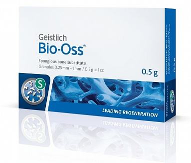

Bio-Oss Spongiosa
Натуральные гранулы с коллагеном

6034
123.45
Преимущества
- стабилизация кровяного сгустка
- материала обладает высокими гидрофильными свойствами. Обеспечен особой системой макро и микро пор, за счет которых происходит быстрое и равномерное пропитывание гранул кровью.
- Остеокондуктивные свойства Geistlich Bio-Oss® обеспечивают надежную и предсказуемую костную регенерацию, гранулы био-ос интегрируются в новую образовавшуюся жизнеспособную кость и становятся ее каркасом
- Низкая скорость резорбции гранул Geistlich Bio-Oss® способствует сохранению объема аугментата.в течение достаточно долгосрочного периода.
- достигается хороший эстетический результат мягких тканей за счет образования долгосрочной основы твердой ткани
- Geistlich Bio-Oss® биофункциональный материал, и поэтому показания к его применению имеют очень широкий круг и используется в различных клинических ситуациях
- Достижение успешных клинических результатов. Используется как самостоятельно, так и при смешивании с аутологичной костью
- Geistlich Bio-Oss® на рынке более 25 лет, результаты его успешного применения размещены более чем в 900 научных публикациях
Показания
Компания Geitlich постоянно совершенствуются, развиваются, в сотрудничестве с ведущими хирургами разрабатывают новые методики лечения и увеличивают круг применения своей продукции в различных клинических ситуациях.
Гранулы гайстлих биос широко используются в хирургической стоматологии, пародонтологии, имплантологии и челюстно-лицевой хирургии:
Преимущества
- стабилизация кровяного сгустка
- материала обладает высокими гидрофильными свойствами. Обеспечен особой системой макро и микро пор, за счет которых происходит быстрое и равномерное пропитывание гранул кровью.
- Остеокондуктивные свойства Geistlich Bio-Oss® обеспечивают надежную и предсказуемую костную регенерацию, гранулы био-ос интегрируются в новую образовавшуюся жизнеспособную кость и становятся ее каркасом
- Низкая скорость резорбции гранул Geistlich Bio-Oss® способствует сохранению объема аугментата.в течение достаточно долгосрочного периода.
- достигается хороший эстетический результат мягких тканей за счет образования долгосрочной основы твердой ткани
- Geistlich Bio-Oss® биофункциональный материал, и поэтому показания к его применению имеют очень широкий круг и используется в различных клинических ситуациях
- Достижение успешных клинических результатов. Используется как самостоятельно, так и при смешивании с аутологичной костью
- Geistlich Bio-Oss® на рынке более 25 лет, результаты его успешного применения размещены более чем в 900 научных публикациях
Показания
Компания Geitlich постоянно совершенствуются, развиваются, в сотрудничестве с ведущими хирургами разрабатывают новые методики лечения и увеличивают круг применения своей продукции в различных клинических ситуациях.
Гранулы гайстлих биос широко используются в хирургической стоматологии, пародонтологии, имплантологии и челюстно-лицевой хирургии:
12
13